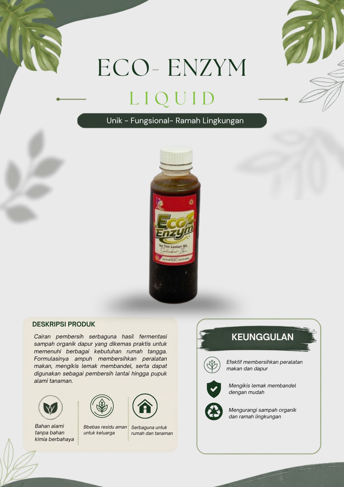
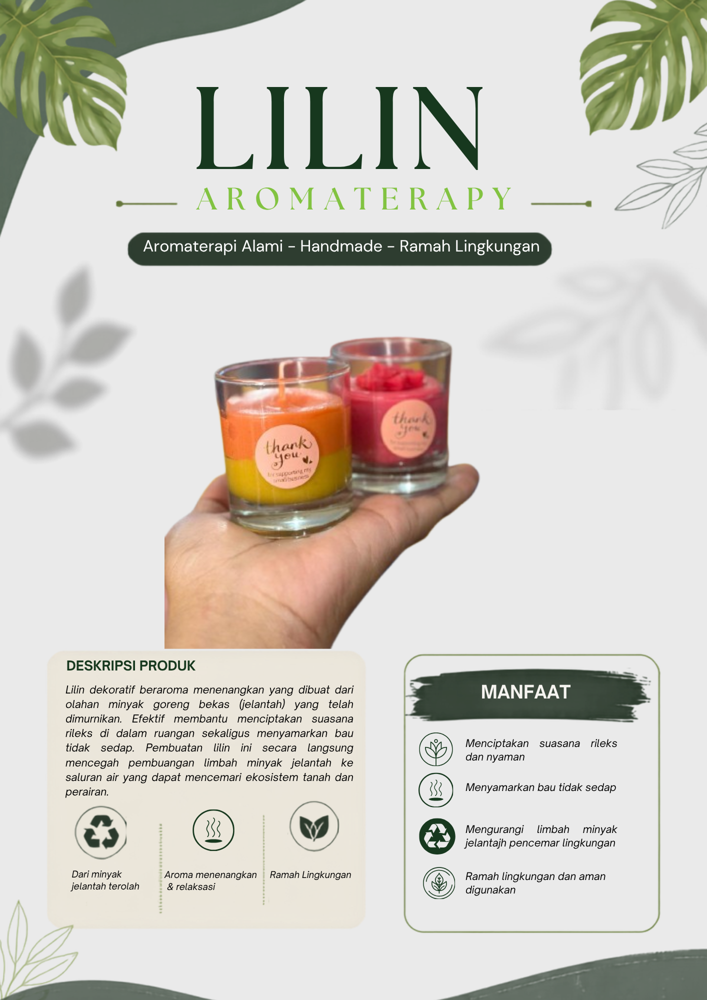
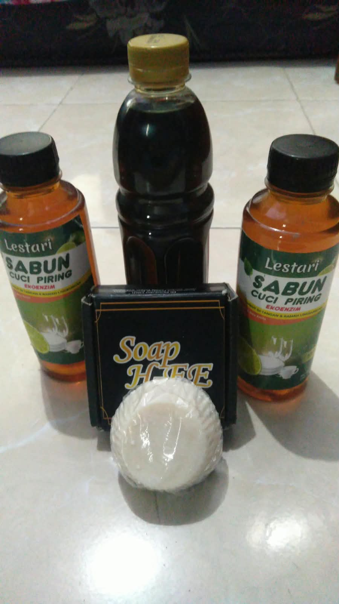
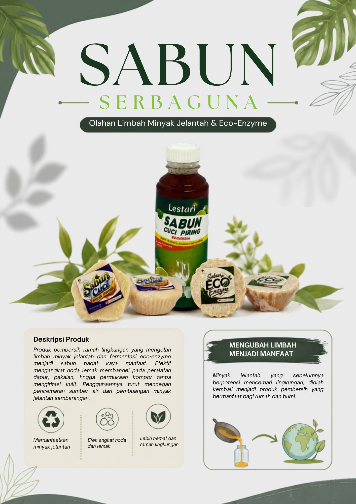
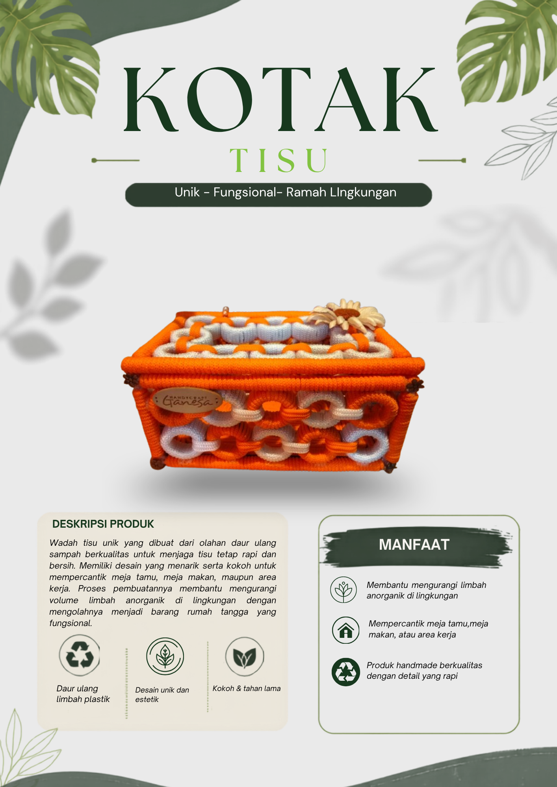
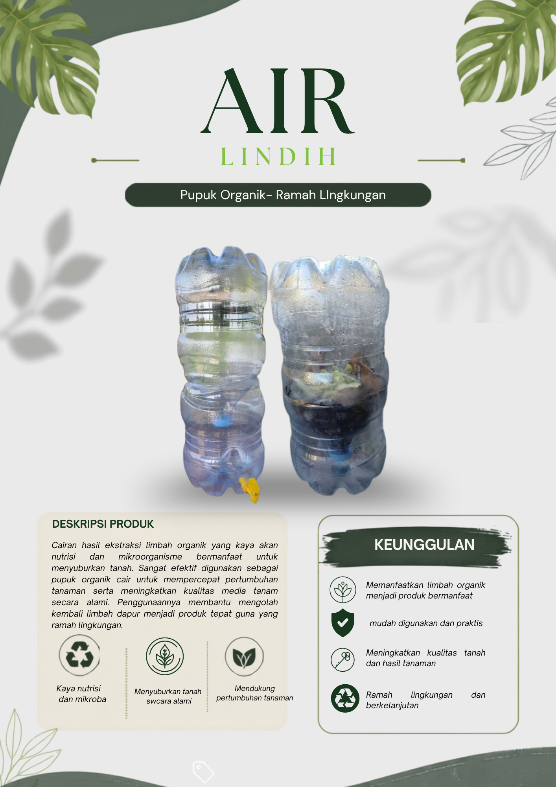
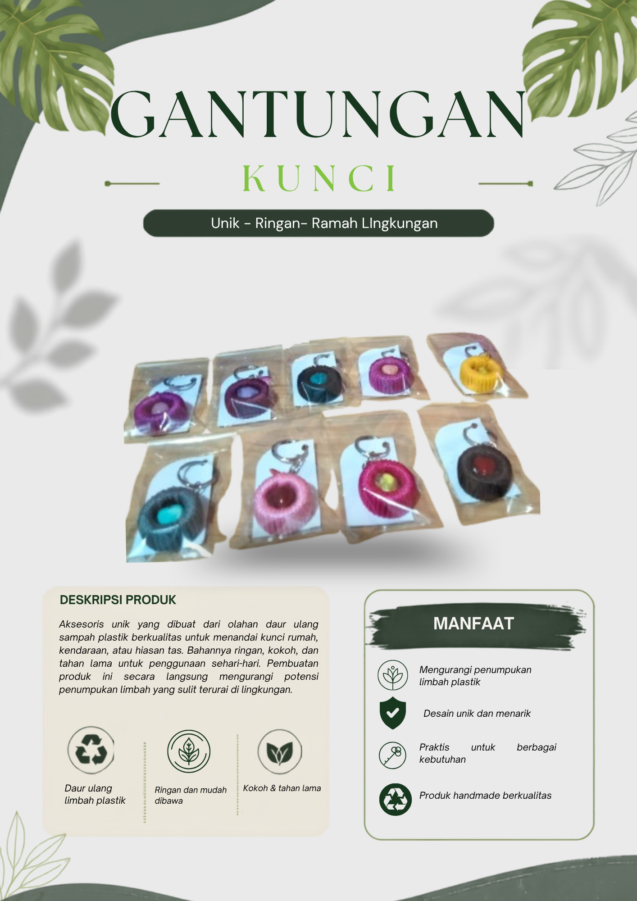
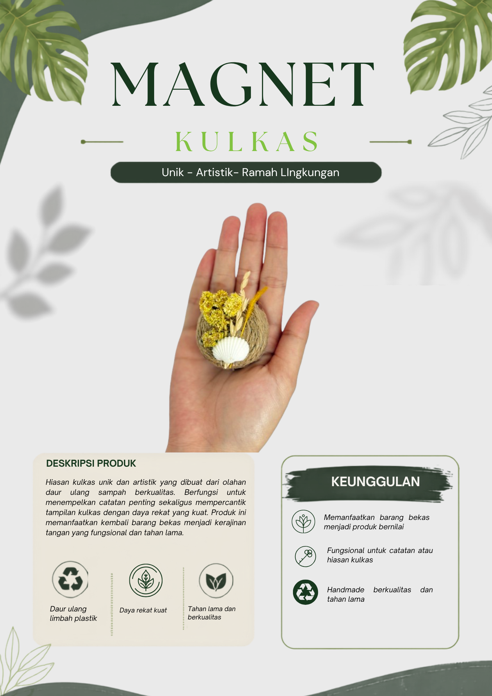

Daur UlangProduk Kreatif
Tas Daur Ulang Menggunakan Tutup Botol Bekas
Produk tas yang dibuat dengan memanfaatkan bahan bekas yang masih dapat digunakan kembali.
MUESA Bank Sampah Tegal Besar
Temukan berbagai produk dan informasi hasil pengelolaan sampah dari MUESA Bank Sampah Tegal Besar Jember.
Produk Kami

Daur UlangProduk Kreatif
Produk tas yang dibuat dengan memanfaatkan bahan bekas yang masih dapat digunakan kembali.


KerajinanProduk Kreatif
Lilin yang dibuat dari pemanfaatan bahan bekas untuk mengurangi limbah lingkungan serta menghasilkan produk yang memiliki nilai guna.


Daur UlangProduk Kreatif
Sabun cuci piring yang dibuat dari bahan alami dan ramah lingkungan.


KerajinanDekorasi
Hiasan dekoratif yang dihasilkan melalui pemanfaatan kembali material yang sudah tidak digunakan.
 Daur Ulang
Daur Ulang
Produk Rumah Tangga
Wadah sederhana yang dibuat dengan memanfaatkan material bekas agar dapat digunakan kembali.


Daur UlangProduk Kreatif
Produk komposter air lidi tanpa kran yang dibuat melalui proses pemanfaatan kembali material bekas sehingga dapat digunakan kembali.


Daur UlangProduk Kreatif
Produk vas bunga daur ulang yang dibuat melalui proses pemanfaatan kembali material bekas sehingga dapat digunakan kembali.


Daur UlangProduk Kreatif
Gantungan kunci yang dibuat dengan memanfaatkan material bekas sehingga dapat digunakan kembali menjadi produk kreatif yang memiliki nilai guna.

 Daur Ulang
Daur Ulang
Produk Kreatif
Magnet kulkas yang dibuat dengan memanfaatkan material bekas menjadi produk kreatif yang dapat digunakan sebagai hiasan sekaligus memiliki nilai guna.
Coba gunakan kata pencarian yang berbeda.